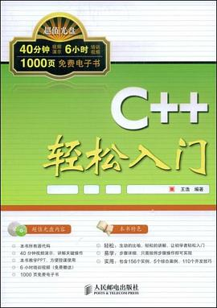

C++轻松入门
哇塞，豆瓣太厉害了！这么无名的书都有啊，这就是我好几年前的编程入门书啊！！！好鸡冻，一搜竟然有！！！虽然学深入了之后会发现这本书错误不少，详略不得当之类的，不过作为入门书籍还是要感激的，当然，新人我是不推荐这本书的啦！~
作品信息
| 作者 | 王浩 |
| 出版社 | 人民邮电出版社 |
| 出版年 | 2009-4 |
| ISBN | 9787115194657 |
| 页数 | 274 |
| 定价 | 36.00元 |
说过什么
2014-01-21 21:28:25
读过 · 时间来自广播，短评来自标记页
哇塞，豆瓣太厉害了！这么无名的书都有啊，这就是我好几年前的编程入门书啊！！！好鸡冻，一搜竟然有！！！虽然学深入了之后会发现这本书错误不少，详略不得当之类的，不过作为入门书籍还是要感激的，当然，新人我是不推荐这本书的啦！~
最后一次看到是 2026-08-01T11:00:53+10:00 · 豆瓣原页